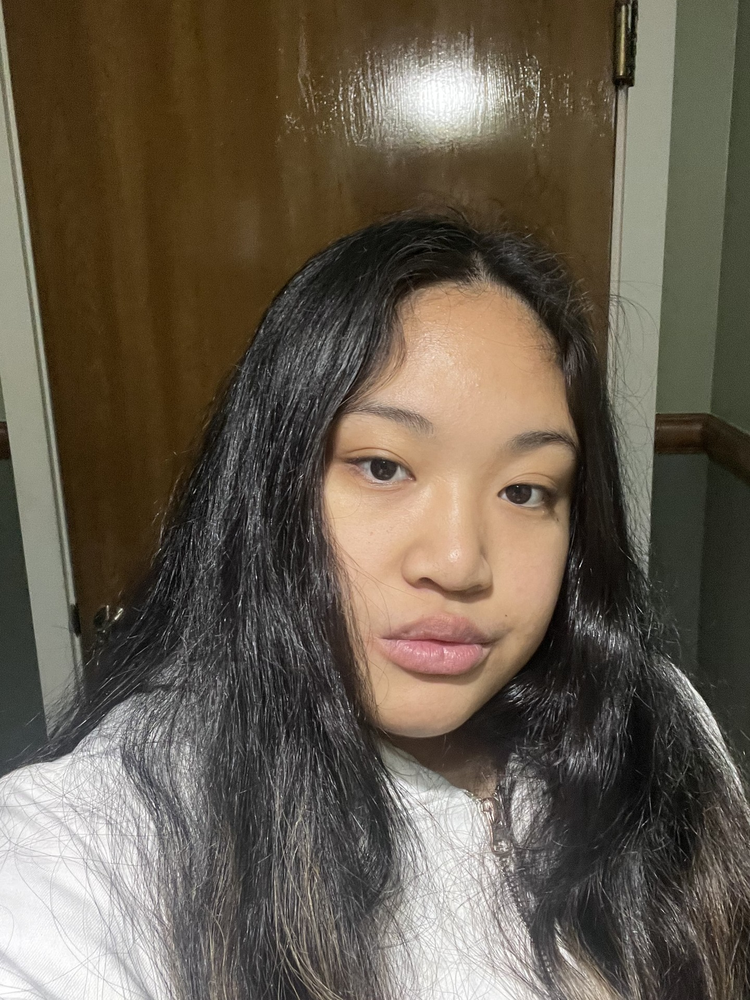

Giecel Tumbaga
giecel.tumbaga@bellevuecollege.edu
I'm a software development student who took an interest in the tech field in my junior year of high school. I went on a trip to Google and was in awe of all the great things of becoming a developer can bring. I took a chance at the interst and I am currently working my way to get there. I have learend soft skills from my job as an E-commerce shopper. I learned communication, customer service skills, adaptability, quick to learn, all in a fast paced envrionment. Now, I bring these soft skills and apply it to the evolving environemnt of the technology industry.
Something that I have learned and grown to love is the continuous learning of being a developer. I find it amazing how many langauages can have similarites which made it eaiser for me to learn new languages! It has taught me to be resilient, always seek information, rely on others to learn what they have learned, and to be paitent.
Outside of coding, I like to go on walks enjoying the wonderful nature of Washington, camping, gaming, reading, crocheting, baking, cooking, tea tasting, and listening to music.